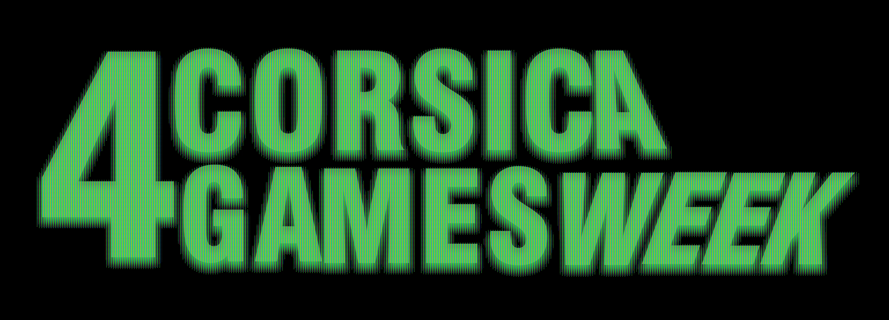

Évènement · Design graphique
Corsica Games Week
Création de l'identité visuelle complète d'une convention de jeux vidéo en Corse : direction artistique, moodboard, logo, mini-logo et affiche principale.
Affiche principale

L'affiche
Pièce centrale de l'identité visuelle, l'affiche devait représenter l'évènement et ses thèmes, lesquels, pour cette année, étaient le retro-gaming et la nostalgie. Pour ce faire, j'ai opté pour une esthétique rappelant les premières heures d'internet fin 90's début y2k. Les couleurs très "Matrix" et les éléments synthwave, rapellent évidemment le net de l'époque, et l'image qu'on se fait du code et du développement à ce moment là. L'idée était d'essayer de conceptualiser une affiche qui aurait pu sortir à cette éôque pour un évènement du genre.
Le travail a porté sur l'équilibre entre impact visuel immédiat et lisibilité des informations pratiques. Tout est fait pour se détacher de l'ère moderne, que ce soit en choisissant uniquement des éléments de l'époque (vieux logos, TV cathodique...), mais aussi en donnant à l'image un grain et un rendu plus "daté". Par exemple, les mains présente sur l'affiche, sont les miennes, d'abord filmées avec un camescope des années 90, puis detourées sur Photoshop et retravaillée pour intégrer le rendu final.
Moodboard

Direction artistique
Avant de créer l'affiche, et tout le reste de ma communication, le moodboard a permis de constitué les bases : univers visuel, palette de couleurs, références typographiques et ambiance générale de l'événement.
Cette étape est essentielle pour aligner la direction artistique avant de se lancer dans la production. On y retrouve les différents éléments desquels j'ai voulu m'inspirer, nottament les pubs jeux-vidéos de l'époque (surtout celles de la PS2), qui étaient je trouve, géniale. Elles étaient toutes uniques, avec des styles propres à chaque console. Du surréalisme, à l'humour en passant par l'étrange, voir même le dérangeant, ces publicités débordaient de créativité, et c'est quelque chose que j'ai voulu retransmettre à travers ce travail. Les différents éléments (magazine, chaînes TV, grunge...) sont en fait l'image que j'ai des années 90 / début 2000. C'est un phénomène étrange, la nostalgie pour une époque que l'on à pas connu, mais c'est ça que j'ai voulu représenter dans mon affiche : la nostalgie de ce qui l'on connu, et l'image que s'en font ce qui n'étaient pas nées.
Identité — Logos

Logo principal & mini-logo
Deux déclinaisons ont été créées : un logo principal pour les supports grand format, et un mini-logo simplifié pour les petits usages numériques — icône, favicon, goodies.
La contrainte était de maintenir la lisibilité et la cohérence entre les deux versions, quelle que soit la taille d'affichage. Le renud final est évidemment inspiré des logos TV de l'époque (style MTV).